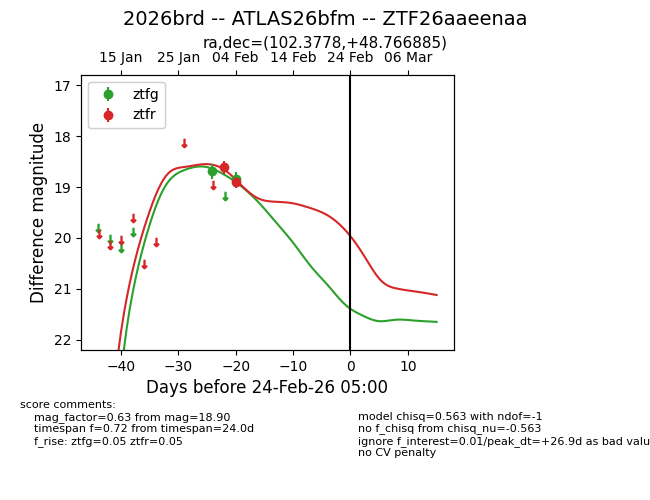
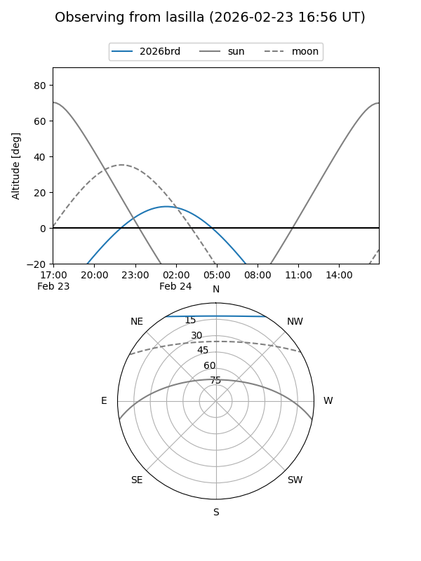
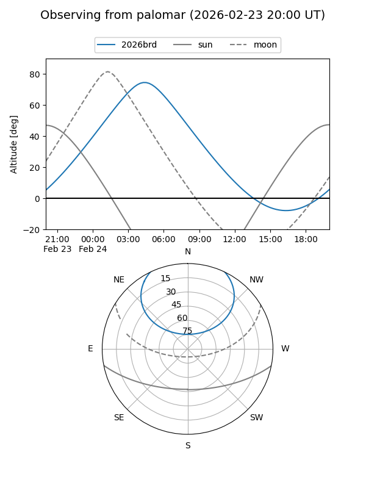

2026brd
Target 2026brd at 2026-02-24 09:08
Aliases and brokers:
FINK: link
Lasair: link
ALeRCE: link
TNS: link
YSE: link
alt names
ZTF26aaeenaa (ztf,fink_ztf)
2026brd (tns,yse)
ATLAS26bfm (atlas)
Coordinates:
equatorial (ra, dec) = 102.3778,+48.76689
equatorial (HMS+DMS) = 06:49:30.68,+48:46:00.79
galactic (l, b) = (167.3841,+19.75410)
Flags:
Photometry:
last ztfg=18.85, ztfr=18.90
2 ztfg, 2 ztfr detections
Lightcurve

Visibility


Additional plots